Manchester United Football Club is a professional football club based in Old Trafford, Greater Manchester, England, that competes in the Premier League, the top flight of English football. Nicknamed "the Red Devils", the club was founded as Newton Heath LYR Football Club in 1878, changed its name to Manchester United in 1902 and moved to its current stadium, Old Trafford, in 1910. Manchester United have won more trophies than any other club in English football, with a record 20 League titles, 12 FA Cups, five League Cups and a record 21 FA Community Shields. United have also won three UEFA Champions Leagues, one UEFA Europa League, one UEFA Cup Winners' Cup, one UEFA Super Cup, one Intercontinental Cup and one FIFA Club World Cup. In 1998–99, the club became the first in the history of English football to achieve the continental European treble. By winning the UEFA Europa League in 2016–17, they became one of five clubs to have won all three main UEFA club competitions.

With a capacity of 74,140 seats, it is the largest club football stadium (and second-largest football stadium overall after Wembley Stadium) in the United Kingdom, and the eleventh-largest in Europe. It is about 0.5 miles (800 m) from Old Trafford Cricket Ground and the adjacent tram stop. Nicknamed "The Theatre of Dreams" by Bobby Charlton, Old Trafford has been United's home ground since 1910, although from 1941 to 1949 the club shared Maine Road with local rivals Manchester City as a result of Second World War bomb damage. Old Trafford underwent several expansions in the 1990s and 2000s, including the addition of extra tiers to the North, West and East Stands, almost returning the stadium to its original capacity of 80,000. Future expansion is likely to involve the addition of a second tier to the South Stand, which would raise the capacity to around 88,000. The stadium's record attendance was recorded in 1939, when 76,962 spectators watched the FA Cup semi-final between Wolverhampton Wanderers and Grimsby Town.

 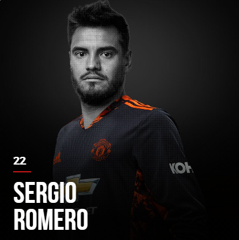
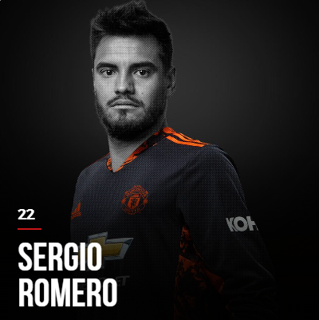
 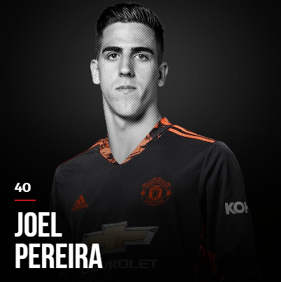
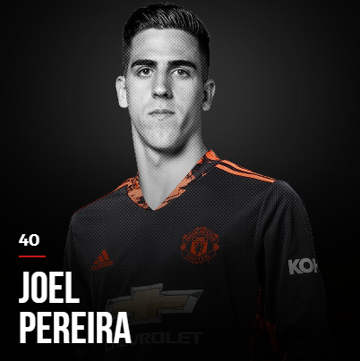
 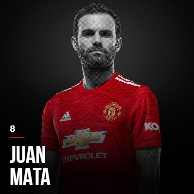
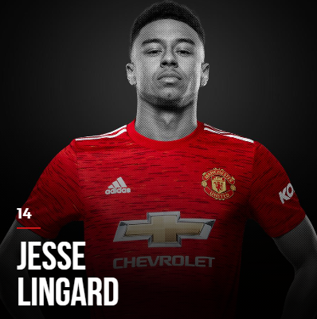
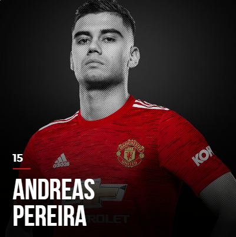
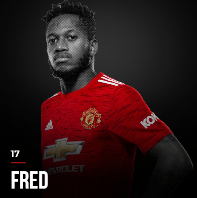
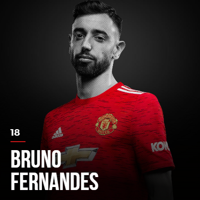
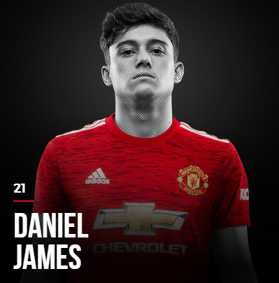
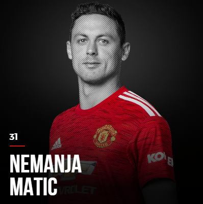
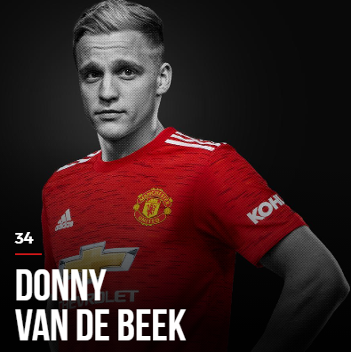
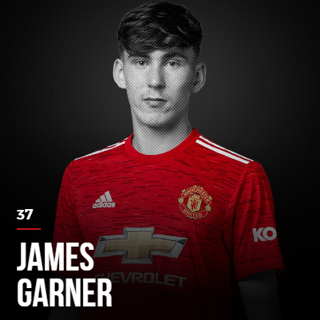
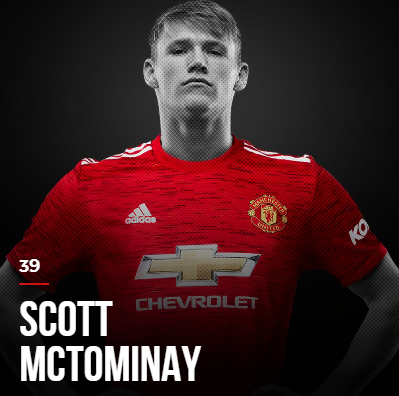
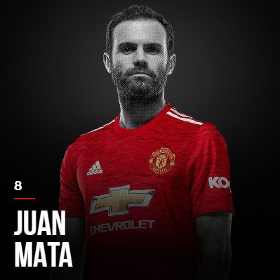
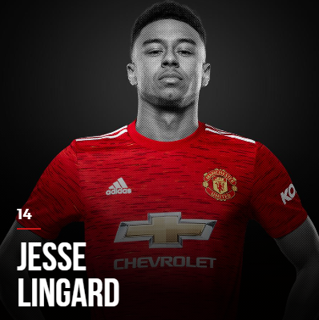
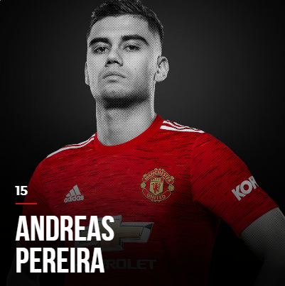
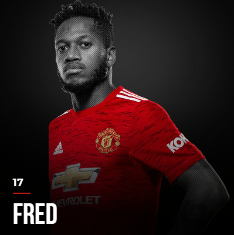
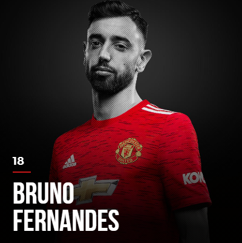
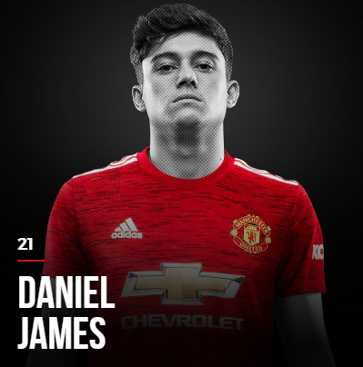
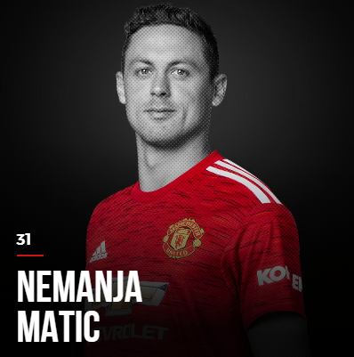
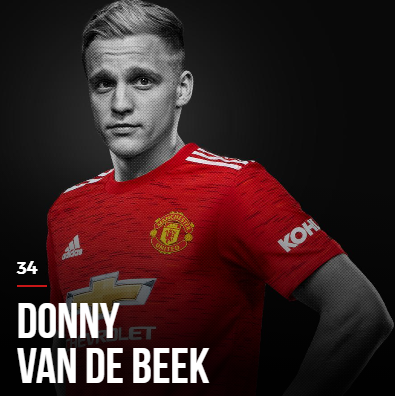
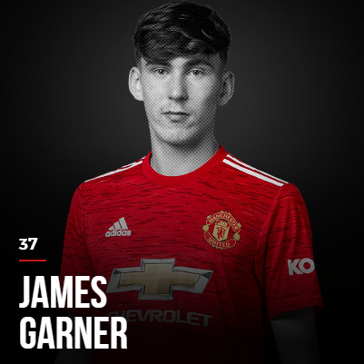
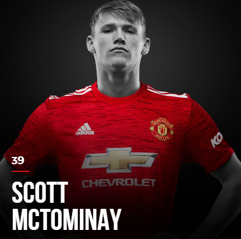